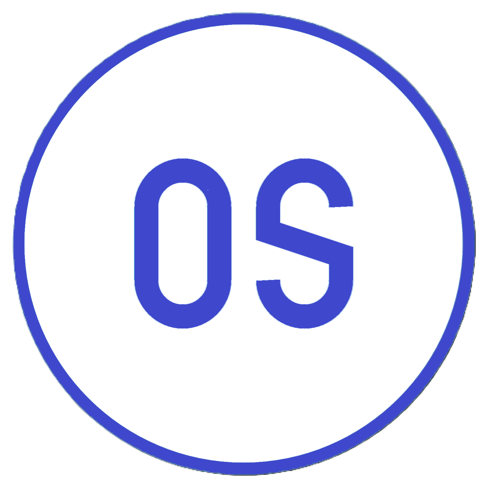
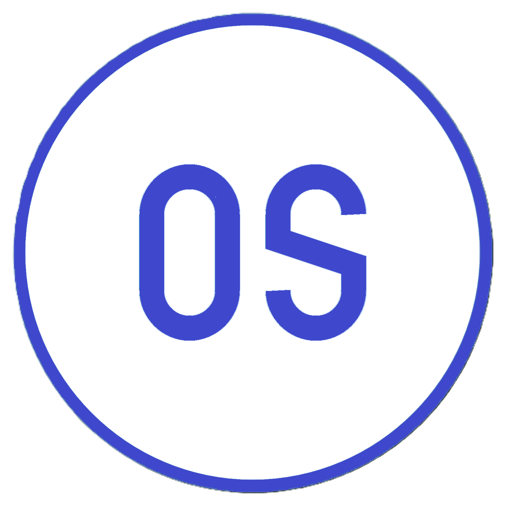
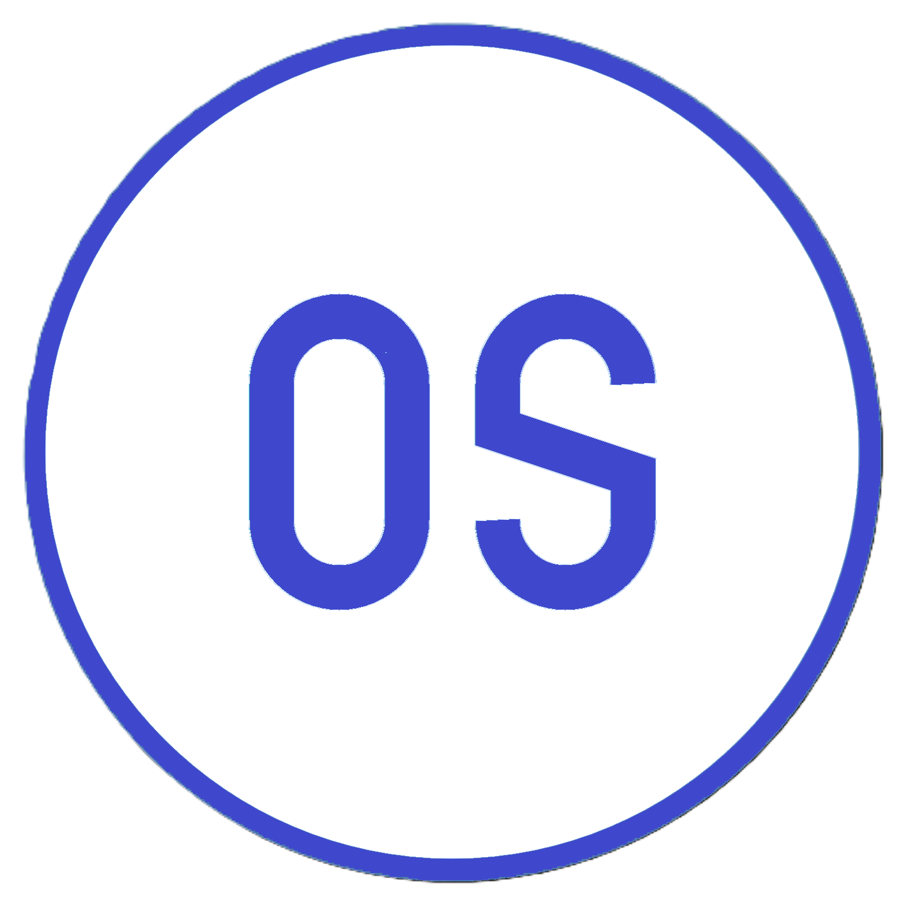

Bonjour, je m'appelle Arthur et je suis actellement étudiant en 1ère année d'Informatique
Je souhaite devenir Développeur Logiciel

à propos de moi
Je suis étudiant en 1ère année d'informatique à l'IUT de Blagnac, j'ai choisi la formation BUT car elle nous prépare mieux au monde professionnel tout en gardant un côté technique et théorique.
Ma passion pour l'informatique et le développement provient de la compréhension de ce monde numérique complexe, le fait de pouvoir repousser des limites tant du côté numérique que physique avec des infrastructures toujours plus puissantes et des logiciels plus rapides et ergonomiques.
De nature autonome, je peux travailler seul ou en groupe, je suis également capable de m’adapter à un environnement inconnu. Je cherche toujours à m'améliorer et à optimiser mes projets pour satisfaire au mieux la demande du client. L’optimisation du code fait partie de mes priorités.
Mon Parcours
Scolarité
IUT Blagnac (2024 - En cours) - Blagnac (31)
BUT Informatique
Lycée Pierre Paul Riquet (2021 - 2024) - Saint Orens De Gameville (31)
Spécialité : Nsi - Mathématique
BAC Général
Collège Les Roussillous (2017 - 2021) - ST Pierre de Lages (31)
Brevet des collèges
Expérience
Modena Sport - Concession automobile Ferrari & Maseratti
J'ai effectué un stage de 3ème d'immersion dans le monde du luxe automobile.
J'ai pu observer la gestion des pièces, la carroserie, la mécanique ainsi que la vente de véhicules d'exceptions Ferrari et Maseratti
Mes compétences
Java
Les utilisations courantes de Java incluent les logiciels d'entreprise, le développement d'applications mobiles, les applications web, les applications cloud, les jeux et les applications IoT.
VSCODE
BlueJ
Python
Python permet de développer des logiciels bureautiques et des applications web, notamment.
OS-SYSTEM
Dans le contexte des applications mobiles, l'OS est la brique logicielle qui définit et permet l'ensemble des interactions possibles entre l'utilisateur et le terminal, mais également entre les applications mobiles tierces et le terminal.
Bash
DEV WEB
Création et intégration de sites web et applications mobiles responsives, accessibles et répondant aux normes W3C.
HTML
CSS
Base de données
Création de base de données pour logiciels
MySQL
WinDesign
Environement de travail
Systèmes d'exploitation : Windows 10
Workflow : Git, Chrome, FileZilla
IDE : Visual Studio Code, Atom
Autres compétences : maîtrise de l'anglais, traduction anglais/français, rédaction
Savoir-être : capacité d'adaptation, travail en équipe, organisation, rigueur, force de proposition
Mes Projets
Recueil de besoins
Pour ce recueil de besoins (ressource R1.05), nous devions réaliser un bilan écrit des besoins de l'association Handball Nord Lozère, sans directement apporter de solutions techniques mais en faisant des propositions en fonction des besoins client.
Nous avons créé des maquettes, des représentations personae, des user flow pour permettre une meilleure visualisation des solutions correspondant à leur besoins.
Application Canoë
L’application Canoë (resource R1.01) a pour but de saisir les informations des céistes (athlètes de canoë) avec leur temps des 2 manches et leurs penalités.
Puis elle vérifie si parmi les 2 manches le céiste est tombé à l’eau ou pas faute d’élimination pour le classement et ensuite de transformer le temps des manches en millisecondes avec leurs pénalités transformées
Enfin, elle additionne le temps des deux manches et établit un classement avec un podium des céistes.

 
